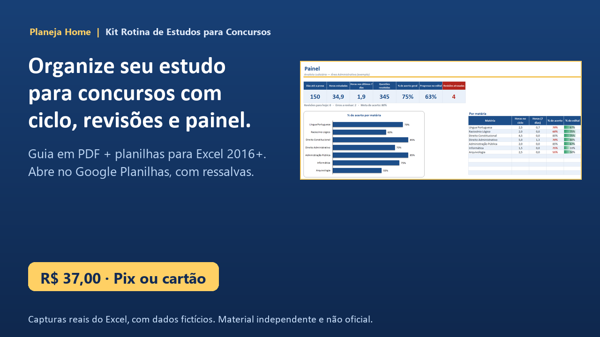
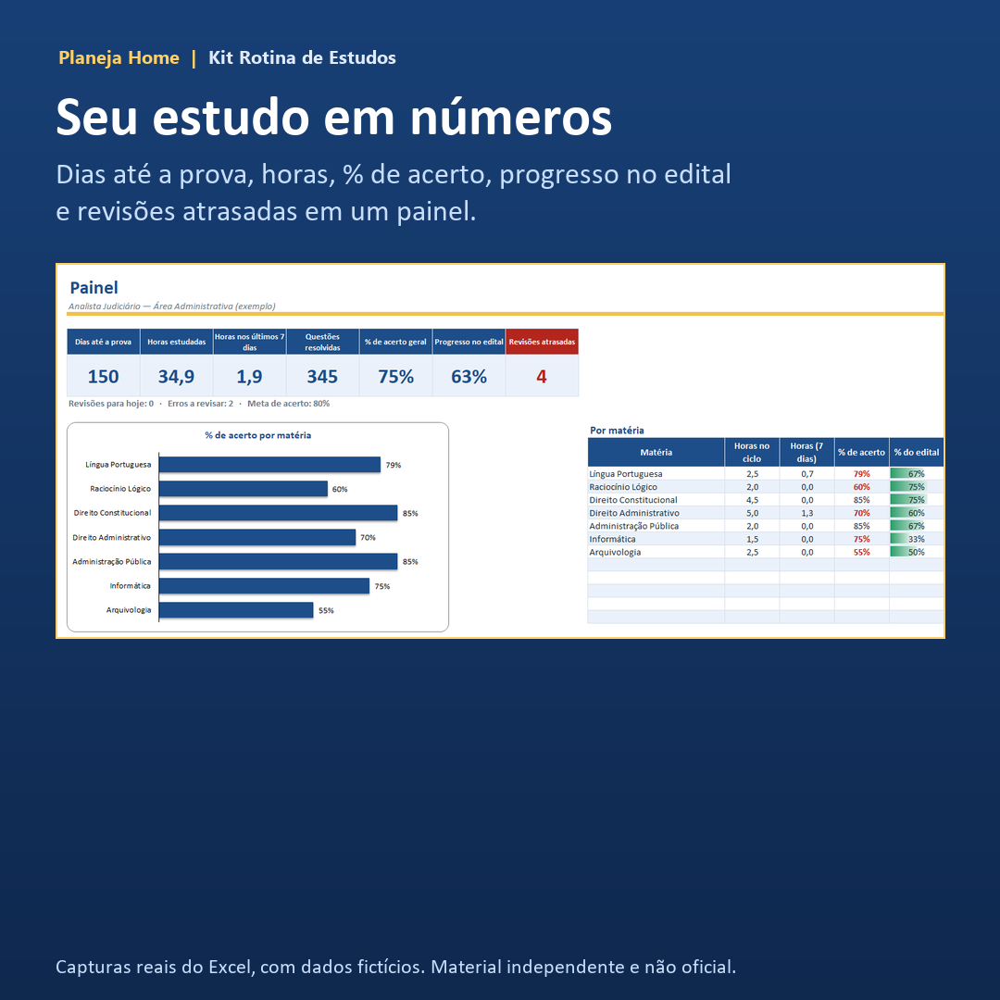
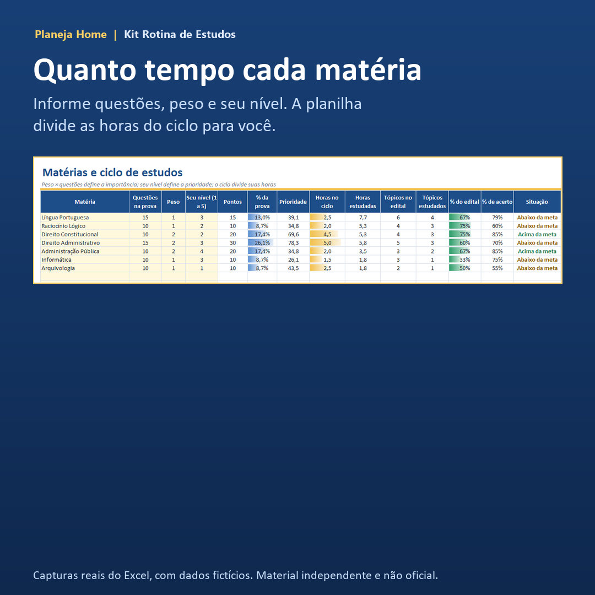
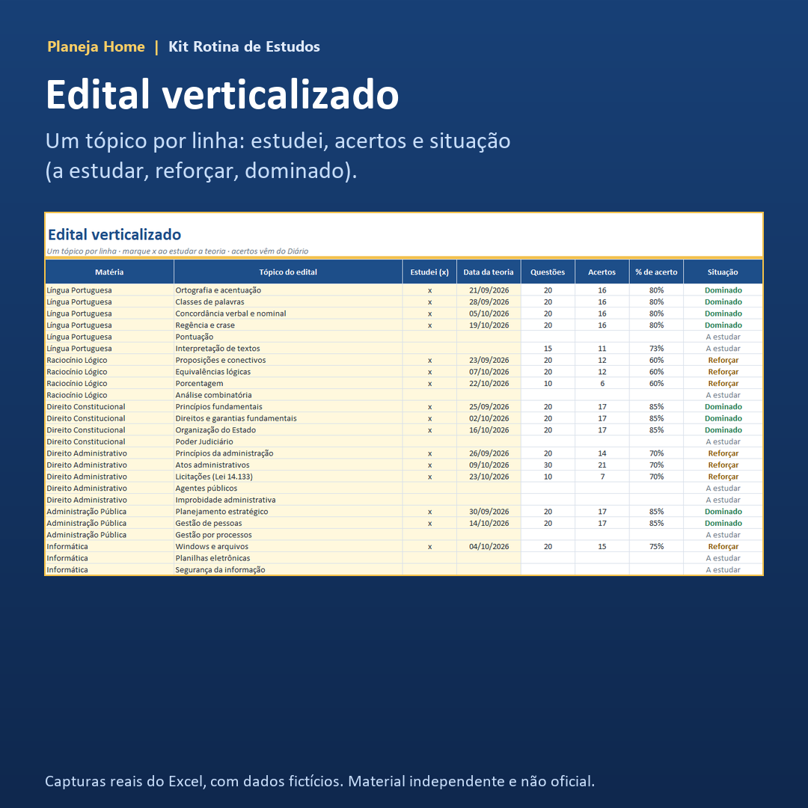
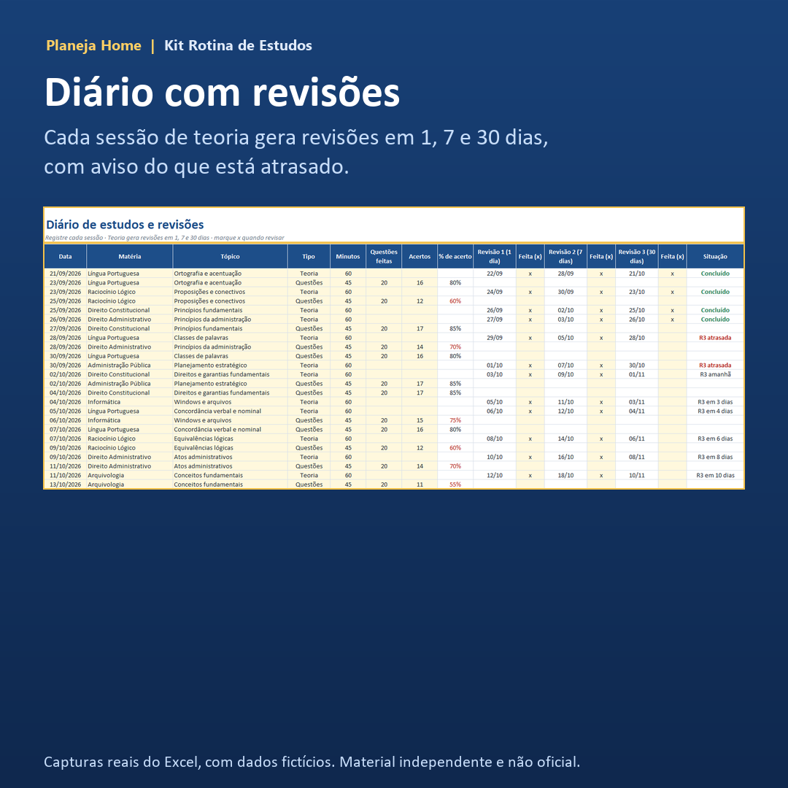
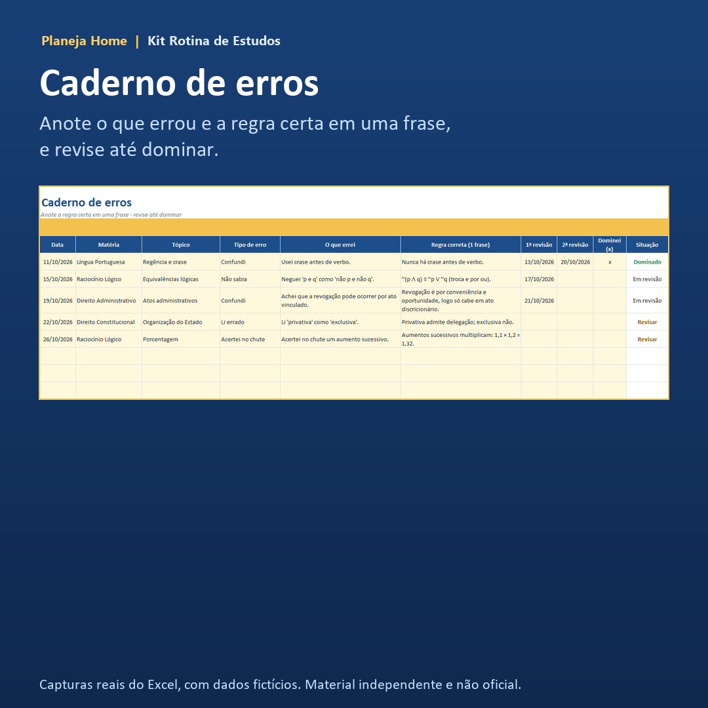

Planeja Home
Organize seu estudo para concursos com um ciclo de estudos, revisões no tempo certo e um painel que mostra onde você evolui
Guia em PDF de 25 páginas e planilhas de Excel que fazem as contas por você. R$ 37,00 no Pix ou cartão, com garantia de 7 dias.

Capturas reais do Excel, com dados de um concurso fictício.
Você se reconhece?
- Estuda por horas e, na hora das questões, parece que esqueceu tudo.
- Perde um dia e o cronograma da semana inteira desanda.
- Não sabe quanto tempo dar a cada matéria.
- Troca de material toda hora e não termina um assunto.
- Não tem como dizer se está melhorando ou só cansado.
Na maioria das vezes, o problema é de organização, não de capacidade. É o que o kit resolve.
O que é
Um guia de 25 páginas e duas planilhas: uma em branco, para o seu concurso, e uma preenchida com um concurso fictício, para você ver tudo funcionando antes de começar. Você digita só nas células amarelas; as fórmulas já estão prontas.
O que vem no kit
- Guia em PDF (13 capítulos): como desmontar o edital, ciclo de estudos no lugar do cronograma rígido, sessão de 60 minutos, revisão 1-7-30, questões, caderno de erros, semanas-modelo de 10, 20 e 35 horas, simulados, últimas 4 semanas e plano de 30 dias.
- Painel: dias até a prova, horas, questões, % de acerto, progresso no edital e revisões atrasadas.
- Matérias e ciclo: com questões, peso e seu nível, a planilha divide as horas entre as matérias.
- Edital verticalizado: cada tópico com a situação: a estudar, reforçar ou dominado.
- Diário com revisões: cada sessão de teoria agenda revisões em 1, 7 e 30 dias e avisa o que está atrasado.
- Caderno de erros e simulados: para registrar a regra certa e comparar com a nota de corte que você estimar.





Para quem é
- Quem está começando e não sabe por onde organizar.
- Quem já estuda, mas sente que o rendimento não acompanha as horas.
- Quem trabalha e tem pouco tempo e precisa que cada hora conte.
Para quem não é
- Quem procura aulas ou resumos das matérias: o kit organiza o estudo, não ensina o conteúdo.
- Quem espera aprovação garantida: nenhum material pode prometer isso.
- Quem quer o edital de um concurso específico já preenchido.
Como acessar
Depois do pagamento, você baixa os três arquivos (guia, planilha em branco e planilha de exemplo) pela Kiwify e recebe o link por e-mail. O PDF abre em qualquer leitor. As planilhas são feitas e testadas para Excel 2016 ou mais recente; abrem no Google Planilhas, mas proteção, gráficos e formatação condicional podem variar.
Garantia de 7 dias
Não gostou? Peça o reembolso em até 7 dias da compra, pela própria Kiwify ou por e-mail, sem burocracia.
Perguntas frequentes
Serve para qualquer concurso?
Serve para quem monta o plano a partir do próprio edital, de qualquer área e nível. Não traz o conteúdo das matérias.Isso garante aprovação?
Não. O kit ajuda a organizar o tempo, as revisões e o acompanhamento do seu desempenho.Tem relação com alguma banca ou órgão?
Nenhuma. É um material independente e não oficial. O concurso de exemplo é fictício.Que programa preciso?
Feito e testado para Excel 2016 ou mais recente. Abre no Google Planilhas, mas proteção, gráficos e formatação condicional podem variar. O guia é PDF.Preciso saber Excel?
Não. Você preenche só as células amarelas.O edital ainda não saiu. Vale começar?
Vale. O guia mostra como usar o edital anterior como base e ajustar depois.Funciona no celular?
O PDF sim. As planilhas rendem mais no computador.Posso usar em mais de um concurso?
Sim, para uso pessoal, salvando uma cópia da planilha em branco para cada um. Revenda é proibida.Material independente e não oficial, sem vínculo com bancas organizadoras ou órgãos públicos. Não garante aprovação em concurso. Uso pessoal; proibida a revenda. Planeja Home